Ask your data.
Tree, grid or raw, and a query bar for JSONPath, jq and SQL on DuckDB.
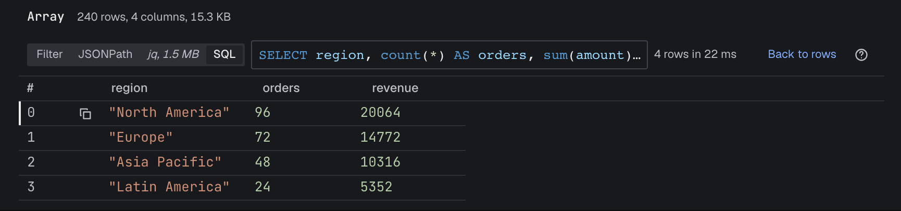
A cell is an endpoint.
route() answers real HTTP.
route("POST /orders", async (req) => { $ curl -sd '{"customer":"Alan","total":30}' \ 127.0.0.1:59916/n/api/orders {"id":4,"status":"pending",…
Typed across cells.
Hover, completion, rename.
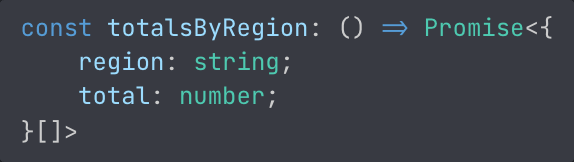
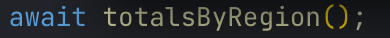
Server and browser.
One notebook.
Client cells in the page call what server cells in Node export, with their types.
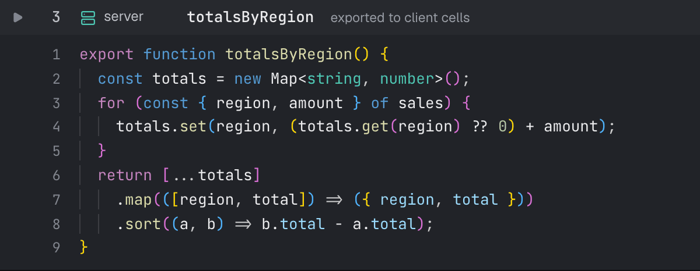
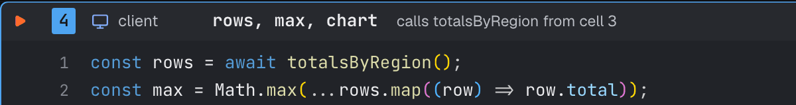
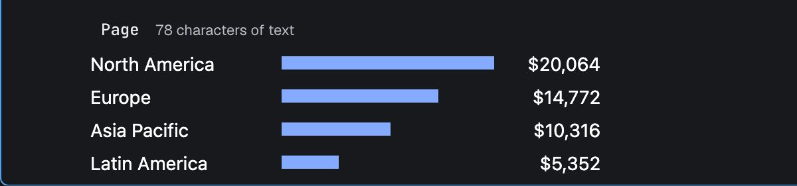
Step through server cells.
Breakpoints, conditions, logpoints, variables and watch, from the page, the CLI or MCP.
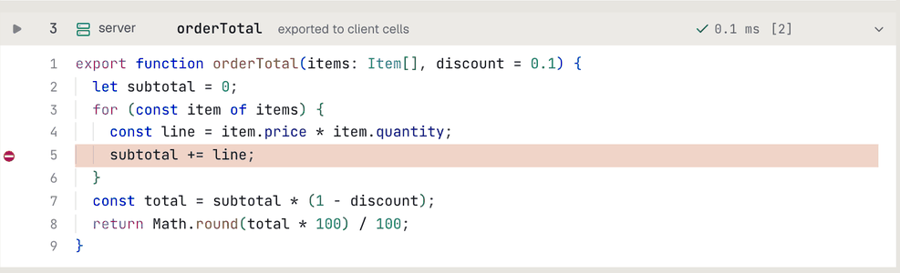
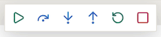
Dark.
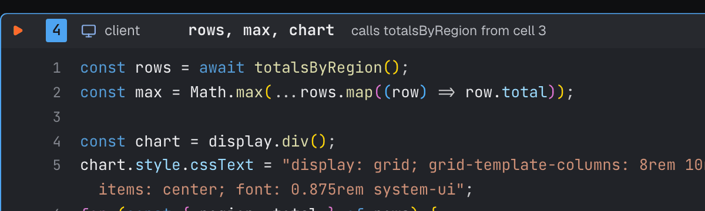
Light.
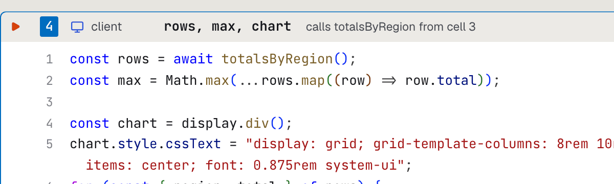
Secrets stay secret.
From .env, shown as ***.
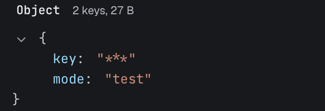
One line to install.
Brings its own Node 26. upgrade, doctor and uninstall built in.
$ curl -fsSL https://github.com/7sStudio/nimbo/releases/latest/download/install.sh | sh … ✓ Checksum verified SHA-256 and size match the release ✓ Unpacked ~/.local/share/nimbo/versions/0.1.0 ✓ Linked ~/.local/bin/nimbo → 0.1.0 ✓ nimbo 0.1.0 is installed.
Built for agents.
Every action is a CLI command and an MCP tool. Their edits wait for your review.
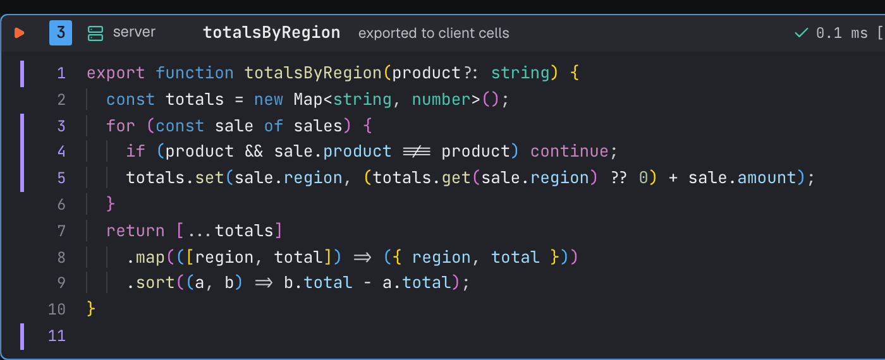
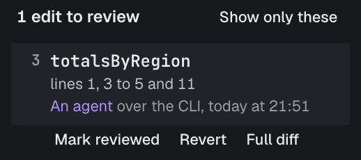
Keyboard first.
VS Code and Jupyter keys, and a shortcuts editor.
Stale, never re-run.
Run Stale catches up.
$ nimbo ls c_i000t1 server ok agent c_x3wbk9 client ok stale agent
Any npm package.
A missing import offers to install it.
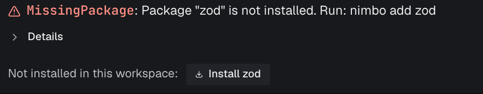
Diffs cell by cell.
.jsnb is plain text. Export to HTML.
cell 3 c_i000t1 server modified, meta lastEdit +5 -3 -export function totalsByRegion() { +export function totalsByRegion(product?: string) {
Local. No telemetry.
A token per workspace, no account.